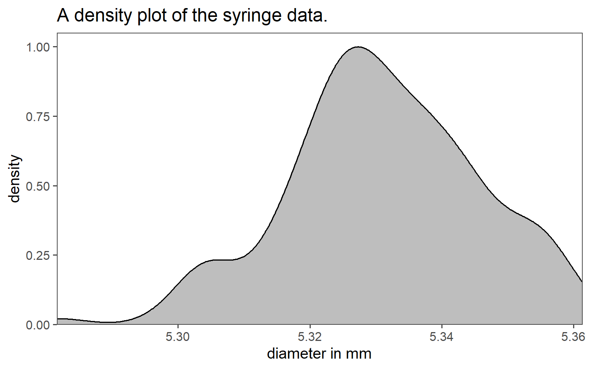
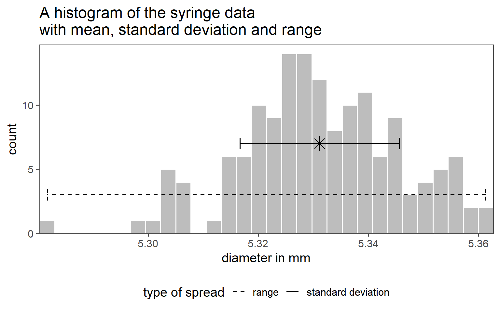
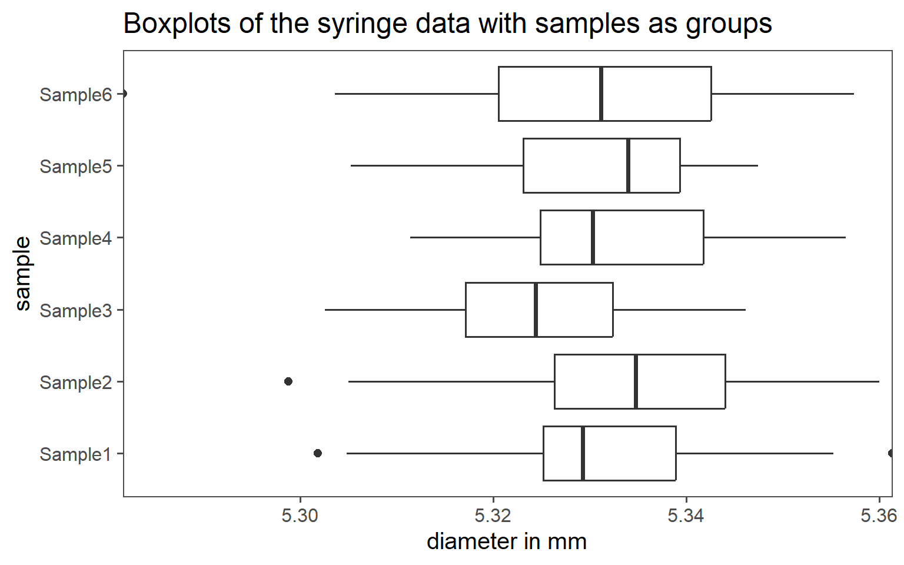
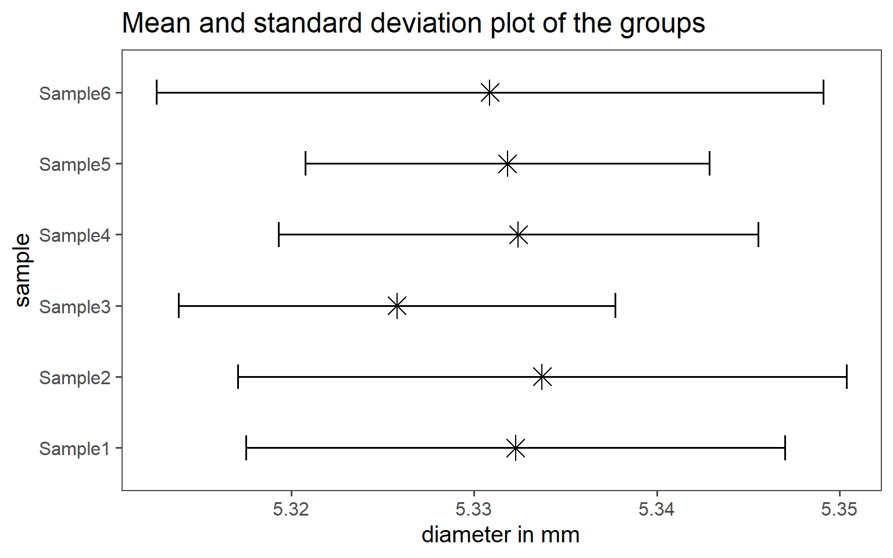
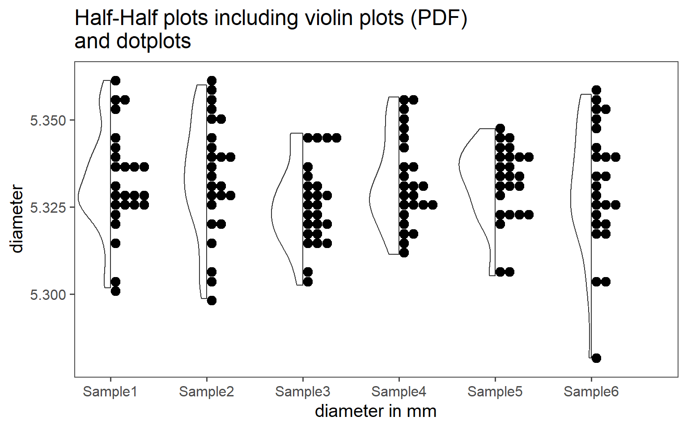
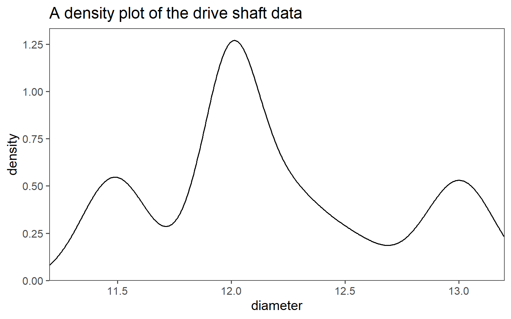
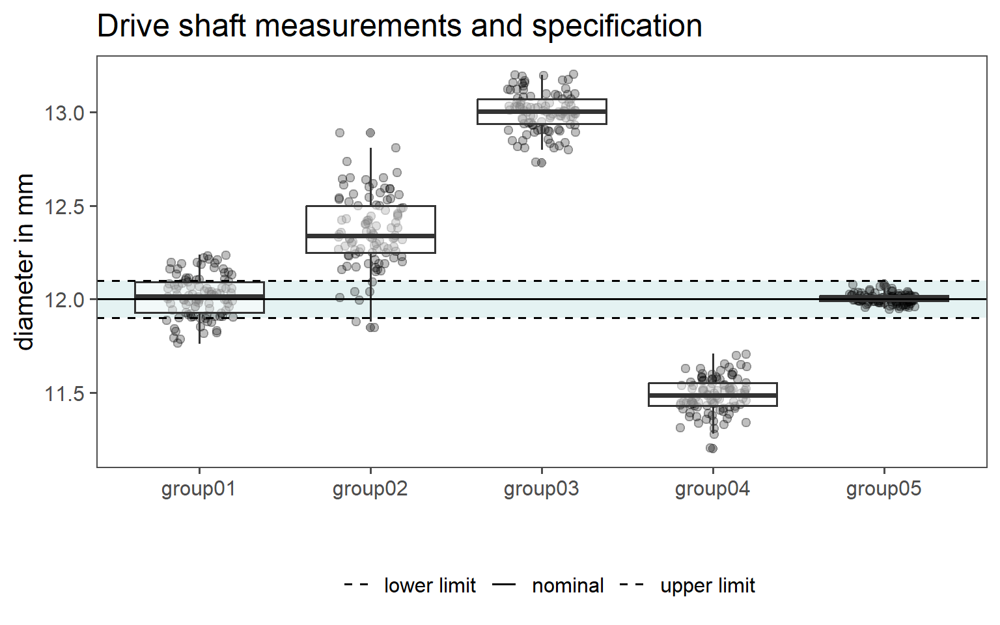

1 Basic Concepts
Statistics is a fundamental field that plays a crucial role in various disciplines, from science and economics to social sciences and beyond. It’s the science of collecting, organizing, analyzing, interpreting, and presenting data. In this introductory overview, we’ll explore some key concepts and ideas that form the foundation of statistics:
Data: At the heart of statistics is data. Data can be anything from numbers and measurements to observations and information collected from experiments, surveys, or observations. In statistical analysis, we work with two main types of data: quantitative (numerical) and qualitative (categorical).
Descriptive Statistics: Descriptive statistics involve methods for summarizing and organizing data. These methods help us understand the basic characteristics of data, such as measures of central tendency (mean, median, mode) and measures of variability (range, variance, standard deviation).
Inferential Statistics: Inferential statistics is about making predictions, inferences, or decisions about a population based on a sample of data. This involves hypothesis testing, confidence intervals, and regression analysis, among other techniques.
Probability: Probability theory is the foundation of statistics. It deals with uncertainty and randomness. We use probability to describe the likelihood of events occurring in various situations, which is essential for making statistical inferences.
Sampling: In most cases, it’s impractical to collect data from an entire population. Instead, we often work with samples, which are smaller subsets of the population. The process of selecting and analyzing samples is a critical aspect of statistical analysis.
Variables: Variables are characteristics or attributes that can vary from one individual or item to another. They can be categorized as dependent (response) or independent (predictor) variables, depending on their role in a statistical analysis.
Distributions: A probability distribution describes the possible values of a variable and their associated probabilities. Common distributions include the normal distribution, binomial distribution, and Poisson distribution, among others.
Statistical Software: In the modern era, statistical analysis is often conducted using specialized software packages like R, Python (with libraries like NumPy and Pandas), SPSS, or Excel. These tools facilitate data manipulation, visualization, and complex statistical calculations.
Ethics and Bias: It’s essential to consider ethical principles in statistical analysis, including issues related to data privacy, confidentiality, and the potential for bias in data collection and interpretation.
Real-World Applications: Statistics has a wide range of applications, from medical research to marketing, finance, and social sciences. It helps us make informed decisions and draw meaningful insights from data in various fields.
1.1 Probability
1.1.1 Overview
Probability theory is a fundamental concept in the field of statistics, serving as the foundation upon which many statistical methods and models are built.
1.1.2 What is Probability?
Probability is a mathematical concept that quantifies the uncertainty or randomness of events. It provides a way to measure the likelihood of different outcomes occurring in a given situation. In essence, probability is a numerical representation of our uncertainty.
1.1.3 Basic Probability Terminology
Experiment: An experiment is any process or procedure that results in an outcome. For example, rolling a fair six-sided die is an experiment.
Outcome: An outcome is a possible result of an experiment. When rolling a die, the outcomes are the numbers 1 through 6.
Sample Space (S): The sample space is the set of all possible outcomes of an experiment. For a fair six-sided die, the sample space is \(\{1, 2, 3, 4, 5, 6\}\).
Event (E): An event is a specific subset of the sample space. It represents a particular set of outcomes that we are interested in. For instance, “rolling an even number” is an event for a six-sided die, which includes outcomes \(\{2, 4, 6\}\).
1.1.4 Probability Notation
In probability theory, we use notation to represent various concepts:
- P(E): Probability of event E occurring.
- P(A and B): Probability of both events A and B occurring.
- P(A or B): Probability of either event A or event B occurring.
- P(E’): Probability of the complement of event E, which is the probability of E not occurring.
1.1.5 The Fundamental Principles of Probability
There are two fundamental principles of probability:
- The Addition Rule: It states that the probability of either event A or event B occurring is given by the sum of their individual probabilities, provided that the events are mutually exclusive (i.e., they cannot both occur simultaneously).
\[\begin{align} P(A \; or \; B) = P(A) + P(B) \end{align}\]
- The Multiplication Rule: It states that the probability of both event A and event B occurring is the product of their individual probabilities, provided that the events are independent (i.e., the occurrence of one event does not affect the occurrence of the other).
\[\begin{align} P(A \; and\;B) = P(A) * P(B) \end{align}\]
1.1.6 Example: Rolling a Fair Six-Sided Die
Consider rolling a fair six-sided die.
- Sample Space (S): \(\{1, 2, 3, 4, 5, 6\}\) (Figure 1.1)
- Event A: Rolling an even number = \(\{2, 4, 6\}\) (Figure 1.1)
- Event B: Rolling a number greater than \(3 = \{4, 5, 6\}\) (Figure 1.1)

1.1.7 Probability in action - The Galton Board
A Galton board, also known as a bean machine or a quincunx, is a mechanical device that demonstrates the principles of probability and the normal distribution. It was invented by Sir Francis Galton1 in the late 19th century. The Galton board consists of a vertical board with a series of pegs or nails arranged in triangular or hexagonal patterns.
A Galton board, also known as a bean machine or a quincunx, is a mechanical device that demonstrates the principles of probability and the normal distribution. It was invented by Sir Francis Galton in the late 19th century. The Galton board consists of a vertical board with a series of pegs or nails arranged in triangular or hexagonal patterns.
Initial Release: At the top of the Galton board, a ball or particle is released. This ball can take one of two paths at each peg, either to the left or to the right. The decision at each peg is determined by chance, such as the flip of a coin or the roll of a die. This represents a random event.
Multiple Trials: As the ball progresses downward, it encounters several pegs, each of which randomly directs it either left or right. The ball continues to bounce off pegs until it reaches the bottom.
Accumulation: Over multiple trials or runs of the Galton board, you will notice that the balls accumulate in a pattern at the bottom. This pattern forms a bell-shaped curve, which is the hallmark of a normal distribution.
Normal Distribution: The accumulation of balls at the bottom resembles the shape of a normal distribution curve. This means that the majority of balls will tend to accumulate in the center, forming the peak of the curve, while fewer balls will accumulate at the extreme left and right sides.
The Galton board is a visual representation of the central limit theorem, a fundamental concept in probability theory. It demonstrates how random events, when repeated many times, tend to follow a normal distribution. This distribution is commonly observed in various natural phenomena and is essential in statistical analysis.

1.1.7.1 Statistics and Probabbility
The Galton board is a nice example how statistics emerge from probability.
1.1.7.1.1 Define the problem
- The board has \(n\) rows of pegs (columns)
- Each ball has an equal probability of moving left or right (assuming no bias)
- The number of rightward moves determines the final position in the bins
1.1.7.1.2 Step 2: Binomial Probability Distribution
Each ball independently moves right (\(R\)) or left (\(L\)) with a probability of \(p=0.5\).
The number of rightwards moves follows a binomial distribution.
\[\begin{align} P(k) = \binom{n}{k} p^k (1 - p)^{n - k} \end{align}\]
- \(n\)
- total number of columns (or pegs encountered)
- \(k\)
- number of rightward moves
- \(\binom{n}{k}\)
- biomial coefficient, given by \(\binom{n}{k} = \frac{n!}{k!(n-k)!}\)
with \(p = 0.5\) this simplifies to
\[\begin{align} P(k) = \binom{n}{k} ( \frac{1}{2})^n \end{align}\]
1.1.7.1.3 Step 3: Position Mapping
The final position of a ball in a bin corresponds to the number of rightwards moves \(k\). If the bins are indexed from \(0\) to \(n\) (where \(k=0\) means all left moves and \(k=n\) means all right moves) the probability of landing in bin \(k\) is:
\[\begin{align} P(k) = \frac{n!}{k!(n-k)!}(\frac{1}{2})^n \end{align}\]
1.2 Population

In statistics, a population is the complete set of individuals, items, or data points that are the subject of a study. Understanding populations and how to work with them is fundamental in statistical analysis, as it forms the basis for making meaningful inferences and drawing conclusions about the broader group being studied. It is the complete collection of all elements that share a common characteristic or feature and is of interest to the researcher. The population can vary widely depending on the research question or problem at hand. A populations true mean is depicted with \(\mu_0\) and the variance is depicted with \(\sigma_0^2\).
1.3 Sample

The key principles behind a sample include its role as a manageable subset of data, which can be chosen randomly or purposefully. Ideally, it should be representative, reflecting the characteristics and diversity of the larger population. Statistical techniques are then applied to this sample to make inferences, estimate population parameters, or test hypotheses. The size of the sample matters, as a larger sample often leads to more precise estimates, but it should be determined based on research goals and available resources. Various sampling methods, such as random sampling, stratified sampling, or cluster sampling, can be employed depending on the research objectives and population characteristics. A samples true mean is depicted with \(\bar{x}\) and the variance is depicted with \(sd\).
1.4 Descriptive Statistics
Descriptive Statistics: Descriptive statistics are used to summarize and describe the main features of a data set. They provide a way to organize, present, and analyze data in a meaningful and concise manner. Descriptive statistics do not involve making inferences or drawing conclusions beyond the data that is being analyzed. Instead, they aim to provide a clear and accurate representation of the data set. Some common techniques and measures used in descriptive statistics include:
- Measures of Central Tendency:
- Mean (average)
- Median (middle value)
- Mode (most frequent value)
- Measures of Variability or Dispersion:
- Range (difference between the maximum and minimum values)
- Variance (average of the squared differences from the mean)
- Standard Deviation (square root of the variance)
- Frequency Distributions:
- Histograms
- Density plots
- Frequency tables
- Bar charts
- Summary Statistics:
- Percentiles
- Quantiles
1.4.1 Histogram

An example for descriptive statistics is shown in Figure 1.3 as a histogram. It shows data from a company that produces pharmaceutical syringes, taken from Ramalho (2021). During the production of those syringes, the so called barrel diameter is a critical parameter to the function of the syringe and therefore of special interest for the Quality Control.
A histogram as shown in Figure 1.3 shows the data of 150 measurements during the QC. On the x-axis the barrel diameter is shown, while the count of each binned diameter is shown on the y-axis. The binning and of data is a crucial parameter for such a plot, because it already changes the appearance and width of the bars. Binning is a trade-off between visibility and readability.
1.4.2 Density plot

Density plots are another way of displaying the statistical distribution of an underlying dataset. The biggest strength of those plots is, that no binning is necessary in order to show the data. The limitation of this kind of plot is the interpretability. An example of a density plot for the syringe data is shown in Figure 1.4. On the x-axis the syringe barrel diameter is shown (as in a histogram). The y-axis in contrast does not display the count of a binned category, but rather the Probability Density Function for the specific diameter. The grey area under the density curve depicts the probability of a syringe diameter to appear in the data. The complete area under the curve equals to \(1\) meaning that a certain diameter is sure to appear in the data.
1.4.3 Boxplot
It is very common to include and inspect measures of central tendency in the graphical depiction of data. A boxplot, also known as a box-and-whisker plot, is a very common way of doing this. A boxplot is a graphical representation of a dataset’s distribution. It displays the following key statistics:
- Median (middle value).
- Quartiles (\(25^{th}\) and \(75^{th}\) percentiles), forming a box.
- Minimum and maximum values (whiskers).
- Outliers (data points significantly different from the rest).
The syringe data in boxplot form is shown in Figure 1.5 as an overlay of the histogram plot before. Boxplots are useful for quickly understanding the central tendency, spread, and presence of outliers in a dataset, making them a valuable tool in data analysis and visualization.
1.4.4 Average, Standard deviation and Range

Very popular measures of central tendency include the average (mean) and the standard deviation (variance) of a dataset. The computed mean from an actual dataset is depicted with \(\bar{x}\) and calculated via \(\eqref{mean}\).
\[\begin{align} \bar{x} = \frac{1}{n}\sum_{i=1}^{n} x_i \label{mean} \end{align}\]
With \(n\) being the number of datapoints and \(x_i\) being the datapoints. The mean is therefore the sum of all datapoints divided by the total number \(n\) of all datapoints. It is not to be confused with the true mean \(\mu_0\) of a population.
The computed standard deviation from an actual dataset is depicted with \(sd\) and calculated via \(\eqref{sd}\).
\[\begin{align} sd = \sqrt{\frac{1}{n} \sum_{i=1}^{n} (x_i - \bar{x})^2} \label{sd} \end{align}\]
The standard deviation can therefore be explained as the square root of the sum of all differences of each individual datapoints to the mean of a dataset divided by the number of datapoints. It is not to be confused with the true variance \(\sigma_0^2\) of a population. The variance of a dataset can be calculatd via \(\eqref{var}\).
\[\begin{align} \sigma = sd^2 \label{var} \end{align}\]
The range from an actual dataset is depicted with \(r\) and calculated via \(\eqref{range}\).
\[\begin{align} r = \max(x_i) - \min(x_i) \label{range} \end{align}\]
The range can therefore be interpreted as the range from minimum to maximum in a dataset.
1.5 Visualizing Groups
1.5.1 Boxplots

The methods described above are especially useful when it comes to visualizing groups in data. The data is discretized and the information density is increased. As with every discretization comes also a loss of information. It is therefore strongly advised to choose the right tool for the job.
If the underlying distribution of the data is unknown, a good start to visualize groups within data is usually a boxplot as shown in Figure 1.7. The syringe data from Ramalho (2021) contains six different groups, one for every sample drawn. Each sample consists of 25 observations in total. On the x-axis the diameter in mm is shown, the y-axis depicts the sample number. The boxplots are then drawn as described above (median, \(25^{th}\) and \(75^{th}\) percentile box, \(5^{th}\) and \(95^{th}\) whisker). The \(25^{th}\) and \(75^{th}\) percentile box is also known as the Interquartile Range
1.5.2 Mean and standard deviation plots

If the data follows a normal distribution, showing the mean and standard deviation for each group is also very common. For the syringe dataset, this is shown in Figure 1.8. The plot follows the same logic as for the boxplots (x-axis-data, y-axis-data), but the data itself shows the mean with a \(\times\)-symbol, as the length of the horizontal errorbars accords to \(\bar{x} \pm sd(x)\).
1.5.3 Half-half plots

Boxplots and mean-and-standard-deviation plots sometimes hide some details within the data, that may be of interest or simply important. Half-half plots, as shown in shown in Figure 1.9, incorporate different plot mechanisms. The left half shows a violin plot, which outlines the underlying distribution of the data using the PDF. This is very similar to a density plot. The right half shows the original data points and give the user a visible clue about the sample size in the data size. Note that the y-position of the points is jittered to counter overplotting. Details can be found in Tiedemann (2022).
1.5.4 Ridgeline plots
Figure 1.10 shows so called ridgeline plots as explained in Wilke (2022). They are in essence density plots that use the y-axis to differentiate between the groups. On the x-axis the density of the underlying dataset is shown. More info on the creation of these plots and graphics is available in Wickham (2016) as well as “The R Graph Gallery – Help and Inspiration for r Charts” (2022).
1.6 The drive shaft exercise
1.6.1 Introduction
A drive shaft is a mechanical component used in various vehicles and machinery to transmit rotational power or torque from an engine or motor to the wheels or other driven components. It serves as a linkage between the power source and the driven part, allowing the transfer of energy to propel the vehicle or operate the machinery.
Material Selection: Quality steel or aluminum alloys are chosen based on the specific application and requirements.
Cutting and Machining: The selected material is cut and machined to achieve the desired shape and size. Precision machining is crucial for balance and performance.
Welding or Assembly: Multiple sections may be welded or assembled to achieve the required length. Proper welding techniques are used to maintain structural integrity.
Balancing: Balancing is critical to minimize vibrations and ensure smooth operation. Counterweights are added or mass distribution is adjusted.
Surface Treatment: Drive shafts are often coated or treated for corrosion resistance and durability. Common treatments include painting, plating, or applying protective coatings.
Quality Control: Rigorous quality control measures are employed to meet specific standards and tolerances. This includes dimensional checks, material testing, and defect inspections.
Packaging and Distribution: Once quality control is passed, drive shafts are packaged and prepared for distribution to manufacturers of vehicles or machinery.
The end diameter of a drive shaft is primarily determined by its torque capacity, length, and material selection. It needs to be designed to handle the maximum torque while maintaining structural integrity and flexibility as required by the specific application. For efficient load transfer, there are ball bearings mounted on the end diameter. Ball bearings at the end diameter of a drive shaft support its rotation, reducing friction. They handle axial and radial loads, need lubrication for longevity, and may include seals for protection. Proper alignment and maintenance are crucial for their performance and customization is possible to match specific requirements.
The end diameter of the drive shaft shall be \(\varnothing 12\pm0.1mm\) (see Figure 1.11). This example will haunt us the rest of this lecture.
1.6.2 Visualizing all the Data


First, some descriptive statistics of \(N=500\) produced drive shafts are shown in Table 1.1 (\(\bar{x}(sd), median(IQR)\)). This first table does not tell us an awful lot about the sample, apart from the classic statistical measures of central tendency and spread.
Variable |
N = 500 1 |
|---|---|
| diameter | 12.17 (0.51), 12.03 (0.58) |
| 1
Mean (SD), Median (IQR) |
|
In Figure 1.12 the data and the distribution thereof is visualized using different modalities. The complete drive shaft data is shown as a histogram (Figure 1.12 (a)) and as a density plot (Figure 1.12 (b)). A single boxplot is plotted over the histogram data in Figure 1.12 (a), providing a link to Table 1.1 (median and IQR). One important conclusion may be draw from those plots already: There may be more than one dataset hidden inside the data. We will explore this possibility further.
1.6.3 Visualizing groups within the data

Fortunately for us, the groups that may be hidden within the data are marked in the orginal dataset and denoted as group0x. Unfortunately for us, it is not known (purely from the data) how these groups come about. Because we did get the dataset from a colleague, we need to investigate the creation of the dataset even further. This is an important point, for without knowledge about the history of the data, it is impossible or at least unadvisable to make valid statements about the data. We will go on with a table of summary statistics, see Table 1.2. Surprisingly, there are five groups hidden within the data, something we would no be able to spot from the raw data alone.
Variable |
N = 100 1 |
|---|---|
| group01 | 12.02 (0.11), 12.02 (0.16) |
| group02 | 12.36 (0.19), 12.34 (0.25) |
| group03 | 13.00 (0.10), 13.01 (0.13) |
| group04 | 11.49 (0.09), 11.49 (0.12) |
| group05 | 12.001 (0.026), 12.000 (0.030) |
| 1
Mean (SD), Median (IQR) |
|
Again, the table is good to have, but not as engagingi for ourself and our co-workers to look at. In order to make the data more approachable, we will use some techniques shown in Section 1.5.
First in Figure 1.13 (a) the raw data points are shown as points with overlayed boxplots. On the x-axis the groups are depicted, while the Parameter of Interest (in this case the end diameter of the drive shaft) is shown on the y-axis. Because we are interested how the manufactured drive shafts behave with respect to the specification limit, the nominal value as well as the uppper and the lower specification limit is also shown in the plot as horizontal lines.
In Figure 1.13 (b) the data is shown as ridgeline density plots. On the x-axis the diameter is depiected, while the y-axis shows two types of data. First, the groups \(1\ldots5\) are shown. For the individual groups, the probability is depicted as a line, therefore indicating which values are most probable in the given group. Again, because we are interested how the manufactured drive shafts behave .w.r.t the specification limit, the nominal value as well as the uppper and the lower specification limit is also shown in the plot as vertical lines.
Sir Francis Galton (1822-1911): Influential English scientist, notable for his contributions to statistics and genetics.↩︎